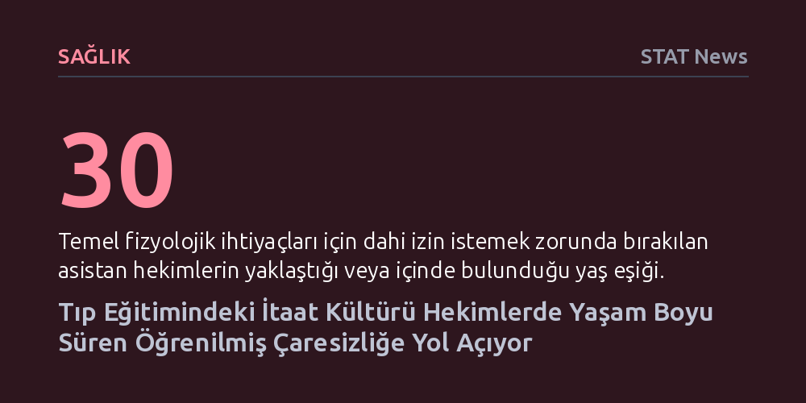

SAGLIK · STAT News · 2026-10-14
Tıp uzmanlık eğitimi, yetişkin hekimleri en temel insani ihtiyaçlarında dahi izne bağlayarak kurumsal bir öğrenilmiş çaresizlik üretiyor. Çocuklaştırıcı bu hiyerarşi, hekimlerin kariyerleri boyunca kötü koşulları kabullenmesine ve mesleki kontrolü yitirmesine yol açıyor.
Hekim tükenmişliğinin bireysel bir direnç eksikliği değil, tıp eğitimindeki itaat ve çocuklaştırma kültürüyle kurumsallaşan bir öğrenilmiş çaresizlik olduğunu gösterir.

Tıp fakültesini bitirmiş, tıp doktoru unvanını almış ve 30'lu yaşlarına yaklaşmış hekimler, uzmanlık eğitimi aldıkları kliniklerde ağır bir kurumsal vesayet altında çalışıyor. Doğrudan insan hayatının sorumluluğunu taşıyan bu hekimler; yemek yemek, su içmek ve hatta tuvalete gitmek gibi Maslow hiyerarşisinin en temel fizyolojik ihtiyaçları için dahi üstlerinden izin istemek zorunda bırakılıyor. Yüksek akademik yetkinliğe ve ağır sorumluluklara sahip yetişkinlerin bu şekilde çocuklaştırılması, klinik ortamın kanıksanmış hiyerarşik yapısını gözler önüne seriyor.
Eski bir kulak burun boğaz cerrahı olan Dr. Frances Mei Hardin, klinik eğitimin başlangıcına damgasını vuran bu muamelenin basit bir kıdem geleneği olmadığını vurguluyor. Dakikalar içinde kritik tıbbi kararlar alması beklenen genç hekimlerin en insani ihtiyaçlarında dahi onay arayan bağımlı bireylere dönüştürülmesi, hekimlik kimliğini daha mesleğin ilk adımlarında aşındıran derin bir tezat yaratıyor.
Temel hak ve ihtiyaçların dahi amirlerin onayına bağlandığı bu hiyerarşik yapı, psikolojide 'öğrenilmiş çaresizlik' olarak tanımlanan klinik tabloyu besliyor. Bireyin, aslında koşulları değiştirme gücüne sahip olduğu durumlarda bile geçmiş tecrübeleri nedeniyle hiçbir şeyi kontrol edemeyeceğine inanarak durumu kabullenmesi ve çaba göstermeyi bırakması, hekimlik pratiğinde kurumsal bir davranış kalıbına dönüşüyor.
Uzmanlık eğitiminin ilk evrelerinde maruz kalınan bu baskıcı ortam, hekimlerin zihnine sistem karşısında etkisiz oldukları inancını yerleştiriyor. Kendi biyolojik ihtiyaçlarını dahi yönetme özerkliği tanınmayan asistan hekimler, ağır çalışma saatleri, angarya işler ve haksız uygulamalar karşısında da ses çıkarmamayı öğreniyor. Kontrol hissinin sistematik olarak yok edilmesi, hekimlerin mesleki bağımsızlığını ve itiraz refleksini felce uğratıyor.
Eğitim sürecinde aşılanan bu boyun eğme refleksi, uzmanlık unvanının alınmasıyla kendiliğinden son bulmuyor; aksine hekimlerin tüm meslek hayatı boyunca onları izleyen kalıcı bir kabullenişe dönüşüyor. Bağımsız çalışan birer uzman olduklarında dahi hekimler, sağlık sisteminin yıpratıcı koşullarına ve idari baskılara karşı aynı edilgenlikle yaklaşmayı sürdürüyor.
Sonuç olarak tıp camiasını saran yaygın tükenmişlik ve örgütsüzlük, yalnızca ağır iş yükünden değil, eğitim yıllarında içselleştirilen bu derin çaresizlik kültüründen kaynaklanıyor. Kendi temel sınırlarını dahi savunmaktan vazgeçirilmiş hekimlerin edilgenliği, sadece sağlık çalışanlarının refahını değil, uzun vadede doğrudan hasta bakımının niteliğini de tehdit eden bir krize dönüşüyor.